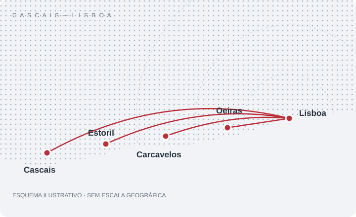

Cascais e Linha
Apoio a equipamentos e redes na zona entre Cascais e Lisboa, com avaliação do pedido e marcação prévia.
Cascais · Estoril · Carcavelos · Oeiras
Pedir assistência nesta zona →Tecnologia com apoio próximo
Um contacto direto para assistência e orçamentos.

Vamos falar
Indica o tipo de equipamento, o problema e a localização. O atendimento e as deslocações são combinados previamente.
Área de atendimento
Assistência informática ao domicílio, de Cascais a Lisboa. Confirma a tua localidade e as condições de deslocação antes da marcação.

Apoio a equipamentos e redes na zona entre Cascais e Lisboa, com avaliação do pedido e marcação prévia.
Cascais · Estoril · Carcavelos · Oeiras
Pedir assistência nesta zona →Assistência ao domicílio para portáteis, desktops, sistemas e Wi-Fi. Disponibilidade e deslocação combinadas para cada pedido.
Pedir assistência em Lisboa →Quando o problema permite intervenção à distância, podemos avaliar apoio remoto mediante autorização e acordo prévio.
Consultar apoio remoto →Representação ilustrativa da zona de atendimento: não é um mapa à escala nem um limite exato de cobertura. Não representa uma morada de loja.